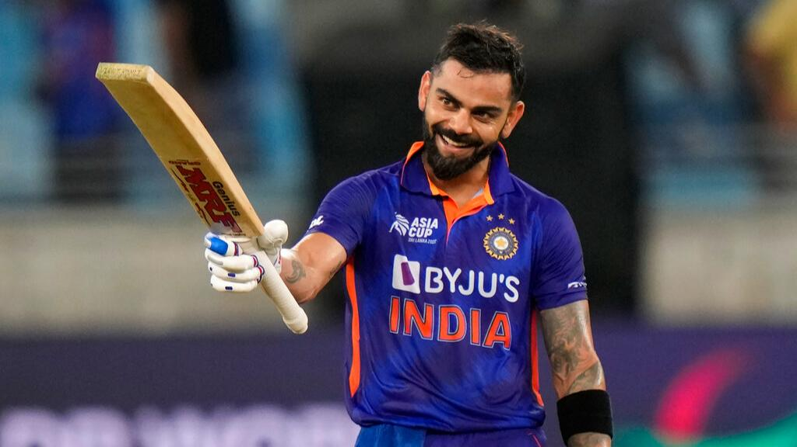
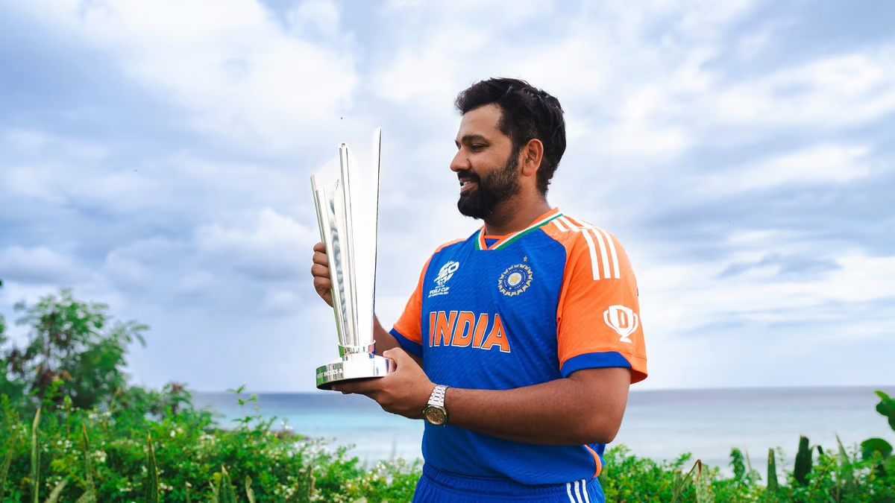

Indian Cricket Stars
Legends of the Game
India has produced some of the finest cricketers in the world. From record-breaking batsmen to deadly pacers, these players have left their mark on the international stage. Here's a spotlight on a few modern legends shaping Indian cricket.

Virat Kohli
One of the most consistent batsmen in world cricket, Kohli is known for his aggressive style, match-winning performances, and incredible fitness.

Rohit Sharma
Rohit is also known as "Hitman" of Indian cricket, Rohit holds the record for the highest individual ODI score of 264 and is known for his elegant stroke play.

Jasprit Bumrah
Bumrah is one of the top fast bowlers in world cricket, known for his deadly yorkers, unorthodox action, and ability to perform under pressure.